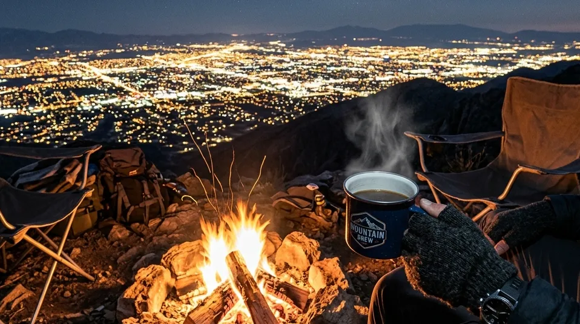

Melarikan diri dari ingar-bingar rutinitas perkotaan tidak selalu berarti kita harus sepenuhnya mengasingkan diri ke dalam kegelapan pekat hutan belantara. Terkadang, mengamati hiruk-pikuk kota dari kejauhan dalam keheningan justru memberikan efek penyembuhan mental (*healing*) yang jauh lebih mendalam. Di sinilah daya tarik utama pencarian tentang Berkemah di Atas Awan: Sensasi Camping di Batu dengan Pemandangan City Light yang Memukau terus melonjak di berbagai platform perjalanan.
Kota Batu, dengan topografinya yang dikelilingi oleh pegunungan megah, menawarkan panggung alami yang sempurna untuk menyaksikan pertunjukan visual ini. Bayangkan Anda sedang duduk di depan tenda yang hangat, menyeruput secangkir kopi robusta lokal yang mengepul, sambil memandangi hamparan lampu kota yang berkelap-kelip menyerupai ribuan kunang-kunang di lembah bawah sana. Melalui artikel ini, kita akan membedah secara mendalam mengapa fenomena *city light camping* di Batu begitu digemari, lengkap dengan rekomendasi titik lokasi paling strategis dan tips teknis agar liburan Anda tidak berujung pada kekecewaan akibat persiapan yang minim.
1. Mengapa Pemandangan City Light di Batu Begitu Istimewa?
Tidak semua dataran tinggi di Indonesia mampu menyajikan pemandangan lampu kota yang memukau. Kualitas pemandangan malam sangat bergantung pada beberapa variabel krusial yang secara kebetulan dimiliki secara paripurna oleh kawasan Batu dan Malang Raya.
Ketinggian Geografis dan Kepadatan Visual Kota
Kota Batu secara geografis berbentuk menyerupai mangkuk raksasa (basin) yang dibentengi oleh Gunung Arjuno, Gunung Welirang, dan Gunung Panderman. Area lereng pegunungannya berada di elevasi 1.000 hingga 1.700 meter di atas permukaan laut. Ketika Anda mendirikan tenda di salah satu lereng ini, Anda secara otomatis mendapatkan sudut pandang mata burung (*bird-eye view*) yang mengarah langsung ke pusat keramaian Malang Raya. Kepadatan permukiman, jalan raya, dan fasilitas wisata yang terus menyala sepanjang malam menciptakan gradasi cahaya kuning dan putih yang sangat rapat dan dinamis.
Dampak Psikologis: Harmoni Ketenangan dan Dinamika Kota
Ada penjelasan psikologis mengapa manusia sangat menyukai pemandangan *city light*. Fenomena ini memberikan kontras yang aman: kita berada dalam zona yang tenang, dingin, dan sunyi, namun mata kita disuguhkan oleh lambang peradaban yang terus bergerak. Hal ini memberikan ruang bagi pikiran untuk melakukan kontemplasi, memproses stres pekerjaan, tanpa harus merasa benar-benar terisolasi dari dunia luar. Suara jangkrik di sekitar tenda berpadu dengan pemandangan lampu kota melahirkan simfoni kedamaian yang unik.
BACA JUGA (Eksplorasi Spot Batu):
2. Rekomendasi Spot Berkemah di Atas Awan Terbaik di Batu
Dalam industri pariwisata luar ruang, lokasi adalah segalanya. Kami telah memfilter dan mengevaluasi berbagai titik kamping berdasarkan aspek keamanan, aksesibilitas kendaraan, dan tentu saja, kualitas panggung *city light* yang ditawarkan tanpa ada halangan pepohonan besar di depan tenda.
Batu Sunrise Camp: Titik Pandang City Light Tanpa Halangan
Jika Anda mencari paket komplet tanpa kompromi, Batu Sunrise Camp memegang reputasi tertinggi. Berada di Kecamatan Bumiaji, orientasi kemiringan tanah di sini menghadap langsung ke jantung Kota Batu dan sebagian Kabupaten Malang. Desain *layout* kapling tendanya dibuat berundak (terasering). Artinya, tenda yang berada di barisan belakang tidak akan terhalang oleh tenda di depannya. Pemandangan lampu kota tersaji nyaris 180 derajat. Ditambah lagi, fasilitas kelistrikan di setiap blok dan kebersihan toilet yang berstandar tinggi membuat lokasi ini sangat direkomendasikan untuk keluarga atau *corporate gathering*.

Kehangatan dari api unggun (campfire) menjadi penyeimbang sempurna di tengah suhu udara pegunungan yang menusuk tulang, menyajikan pengalaman mengobrol mendalam berlatar gemerlap lampu kota. (Ilustrasi AI)Bukit Jengkoang: Suasana Eksklusif di Tepian Tebing
Bagi kalangan pencari privasi ekstra, Bukit Jengkoang menawarkan lanskap perbukitan yang lebih terpencil. Jalan menuju lokasi ini sedikit lebih menantang dan lebih cocok diakses oleh kendaraan berpenggerak 4x4 atau motor *trail*. Namun, setibanya di puncak, hamparan sabana hijau dan pemandangan lembah bercahaya di malam hari akan membayar lunas semua kelelahan di perjalanan. Spot ini sangat cocok bagi mereka yang mencari pelarian dari keramaian masal.
Puncak Brakseng: Dimensi Ketinggian Ekstrem di Cangar
Berada di atas ketinggian 1.700 mdpl di jalur alternatif Cangar, Puncak Brakseng dikenal dengan kabutnya yang tebal. Namun, pada malam-malam musim kemarau di mana visibilitas sedang bersih, pemandangan *city light* dari ketinggian ekstrem ini benar-benar terasa seperti Anda sedang melayang di atas awan. Catatan penting: angin di spot ini sangat kencang, sehingga spesifikasi tenda aerodinamis dan pasak yang tertanam kuat sangat diwajibkan.
3. Panduan Teknis Mendapatkan Pengalaman Kemah City Light Maksimal
Pergi berkemah bukan sekadar memindahkan lokasi tidur. Agar ekspektasi Anda akan keindahan malam terpenuhi, ada beberapa aspek teknis persiapan yang tidak boleh diabaikan, terutama oleh para pemula.
Memilih Jendela Waktu yang Tepat (Manajemen Cuaca)
Pemandangan *city light* musuh terbesarnya adalah hujan badai dan kabut pekat permanen. Oleh karena itu, hindari merencanakan kemah pada puncak musim penghujan (Desember hingga Februari). Jendela waktu terbaik (*golden time*) untuk berkemah di area Batu adalah saat memasuki musim kemarau, tepatnya dari pertengahan Mei hingga awal September. Pada periode ini, langit cenderung bersih (tanpa awan), bintang-bintang terlihat tajam, dan lampu kota di bawah bersinar tanpa terbiaskan oleh partikel air yang rapat.
Teknik Dasar Fotografi Malam (Night Photography) untuk Pemula
Sangat disayangkan jika panorama memukau ini tidak diabadikan dengan baik. Kamera *smartphone* modern memang sudah canggih, namun ada batasan sensor. Untuk hasil maksimal, gunakan kamera DSLR atau Mirrorless dan terapkan teknik berikut:
- Wajib Gunakan Tripod: Fotografi malam membutuhkan kestabilan absolut karena sensor kamera memerlukan waktu lebih lama untuk menyerap cahaya. Getaran sedikit saja akan membuat foto lampu kota menjadi buram (*blur*).
- Pengaturan Long Exposure: Ubah kamera ke mode Manual (M). Atur *Shutter Speed* di rentang lambat (sekitar 10 hingga 30 detik). Gunakan bukaan lensa (Aperture) di F/8 hingga F/11 agar seluruh pemandangan kota dari ujung ke ujung fokus dan tajam.
- Pertahankan ISO Rendah: Jangan tergiur menaikkan ISO terlalu tinggi (usahakan maksimal ISO 400-800) untuk mencegah munculnya bintik-bintik *noise* yang merusak estetika foto malam Anda.
BACA JUGA (Tips Perlengkapan):
4. Kesimpulan
Mencari kedamaian melalui konsep Berkemah di Atas Awan: Sensasi Camping di Batu dengan Pemandangan City Light yang Memukau telah terbukti menjadi salah satu metode penyembuhan stres paling efektif di era modern. Kombinasi udara gunung yang memicu kenyamanan relaksasi fisik dengan visual hamparan cahaya kota yang memanjakan mata menciptakan sebuah paradoks alam yang memikat. Dengan pemilihan lokasi premium seperti Batu Sunrise Camp dan persiapan perlengkapan yang presisi, liburan akhir pekan Anda dijamin akan menghasilkan memori indah yang terus melekat, sekaligus foto-foto lanskap memukau yang layak mengisi beranda media sosial Anda.